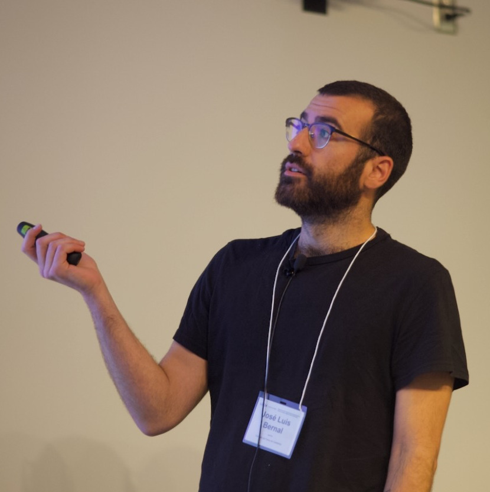

 Giving a talk in LIM2024, UIUC
Credit: Joaquin Vieira, LIM2024
I’m Jose, and work as a theoretical physicist interested in cosmology and astrophysics. I have a position as a `investigador científico’ (tenured senior position) in the Consejo Superior de Investigaciones Científicas (CSIC), working at the Institute of Physics of Cantabria (IFCA) in Santander, Spain. Before moving back to Spain, I earned my PhD title at the Institute of Cosmos Sciences in the University of Barcelona (ICC-UB), Spain, under the supervision of Prof. Licia Verde, worked as a Davis Postdoctoral Fellow at the Department of Physics and Astronomy of Johns Hopkins University in Baltimore, US, working primarily with the group of Prof. Marc Kamionkowski, and spent few months as a postdoctoral research fellow at the Max Planck Institute for Astrophysics in Garching, Germany, working within the physical cosmology group led by Prof. Eiichiro Komatsu.
Mainly, I work on the interface between theoretical and observational cosmology, with special interest in dark matter and the phenomenology of models beyond ΛCDM in cosmological observables. During the last years, my interests have been increasingly overlapping with extragalactic astrophysics, working on probes, like line-intensity mapping, that are sensitive both to cosmology and astrophysics. I also have dedicated much work and thought to tensions between cosmological observations and agnostic approaches to analyze their measurements.
-
The cosmology group at IFCA is always looking for talented postdocs, PhD candidates and Masters students. If you are interested, please contact me! There are regular openings and plenty of opportunities for these positions.
-
You can find my CV here:
Publications
An exhaustive compilation of my publications can be found in your favorite database
And my GitHub page has repositories with all my public codes:
Contact information
José Luis Bernal
Instituto de Física de Cantabria
Office 121
Av. de los Castros, 39005 Santander, Cantabria, Spain